Guide
Tap an item below to expand the guide with images and instructions.
For information not covered in the guide, please check the Q&A page.
Open Q&A Browse answers and troubleshooting tipsRemote FTP/SMB Access with VPN
Use a VPN for Remote FTP Access
FTP can send login information and file data without encryption, depending on the server configuration. If you need to use FTP from outside your home or office, avoid exposing the FTP port directly to the public internet. Connect to your home or NAS network through a VPN first, then add the FTP server in TorchPhoto using its internal LAN address.
SMB is also usually best kept inside a local network. If your NAS supports SMB and your VPN allows access to devices on the home LAN, you can connect through the VPN first and then add the SMB server with its local address instead of opening SMB ports to the internet.
- FTP remote setup: VPN + local FTP address
- Why it helps: the VPN places your device on the local network and reduces direct exposure of plain FTP traffic
- SMB remote setup: VPN + local SMB address, when your NAS and VPN routing support LAN access
- Modern VPN option: WireGuard is simple, fast, and widely recommended
- Avoid when possible: direct public FTP or SMB port forwarding for private photo storage
Instant Thumbnail Generation
How Instant Thumbnails Work
Instant thumbnail generation lets TorchPhoto create thumbnails quickly without downloading the full original file from your server. TorchPhoto reads only enough original data to build a preview, so large folders can be prepared faster and with less waiting.
You can choose Low, High, or Ultra for instant thumbnail generation. Low prioritizes speed and is the best choice when you want thumbnails as quickly as possible, but a small number of items may fail to generate. High reads more source data to improve the success rate. Ultra reads the most source data and may take longer, but it can further improve the chance of creating thumbnails for difficult files. All three options produce thumbnails with the same final dimensions and storage quality.
If an instant thumbnail still fails, you can generate it later with TorchPhoto's high-quality thumbnail improvement feature. Thumbnail improvement creates standard high-quality TorchPhoto thumbnails without the instant-thumbnail limitations, so failed instant thumbnails can still be completed reliably.
- Low: fastest instant thumbnail generation, with a chance that some thumbnails may fail
- High: reads more source data than Low to increase thumbnail generation success
- Ultra: reads the most source data and may take longer, but offers the best chance for difficult files
- Recommended flow: start with instant thumbnails, then use thumbnail improvement for failed items or thumbnails that need better detail
1. Add a Server
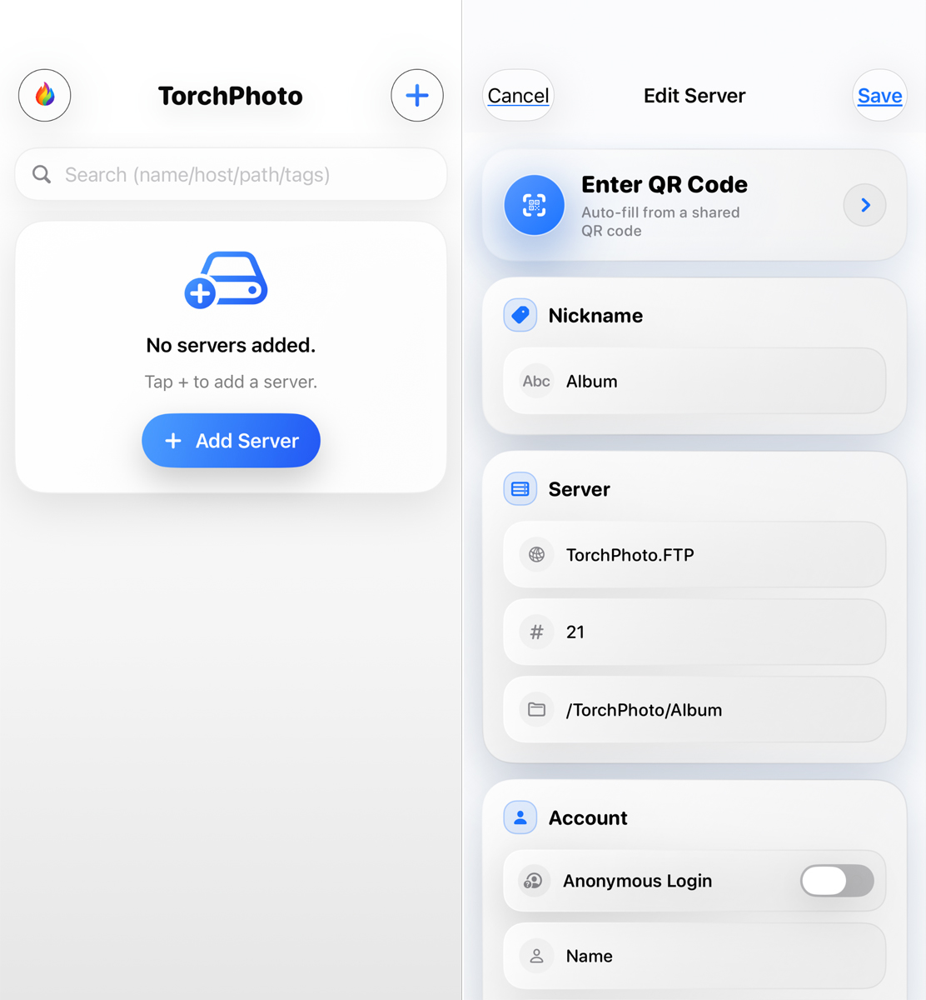
How to Add a Server
Open the add server screen and choose the protocol your server actually uses: FTP, SFTP, SMB, or WebDAV. Enter the address, port, login information, and root path, then test the connection before saving. The root path controls the highest folder TorchPhoto can browse, so it must match the server setup; for SMB, it normally begins with the shared folder name.
A successful test confirms that the server accepted the connection. If the server list is still empty, check the root path, folder permissions, and whether the folder contains supported photos or videos. A server on your home network also requires iOS Local Network permission, while access from outside the home requires a reachable server address or a VPN connection.
- Select the correct protocol and enter its address and port
- Enter the login information and the server root path
- Test the connection, then save the server
2. QR Code Share

QR Code Sharing and Scanning
A server QR code packages the connection settings needed by another TorchPhoto installation, reducing manual entry of the protocol, address, port, and folder path. Long-press the server, create the QR code, and scan it on the receiving device to review and register the connection.
The QR code does not make a private server accessible from the internet. The receiving device must still be able to reach the server through the same network, a public address, or a VPN. Because the code contains private connection information, share it only with people and devices you trust.
- Long-press a server item and select Share QR
- Scan the code on another device and review the imported settings
- Connect from a network that can reach the server
3. Generate Thumbnails
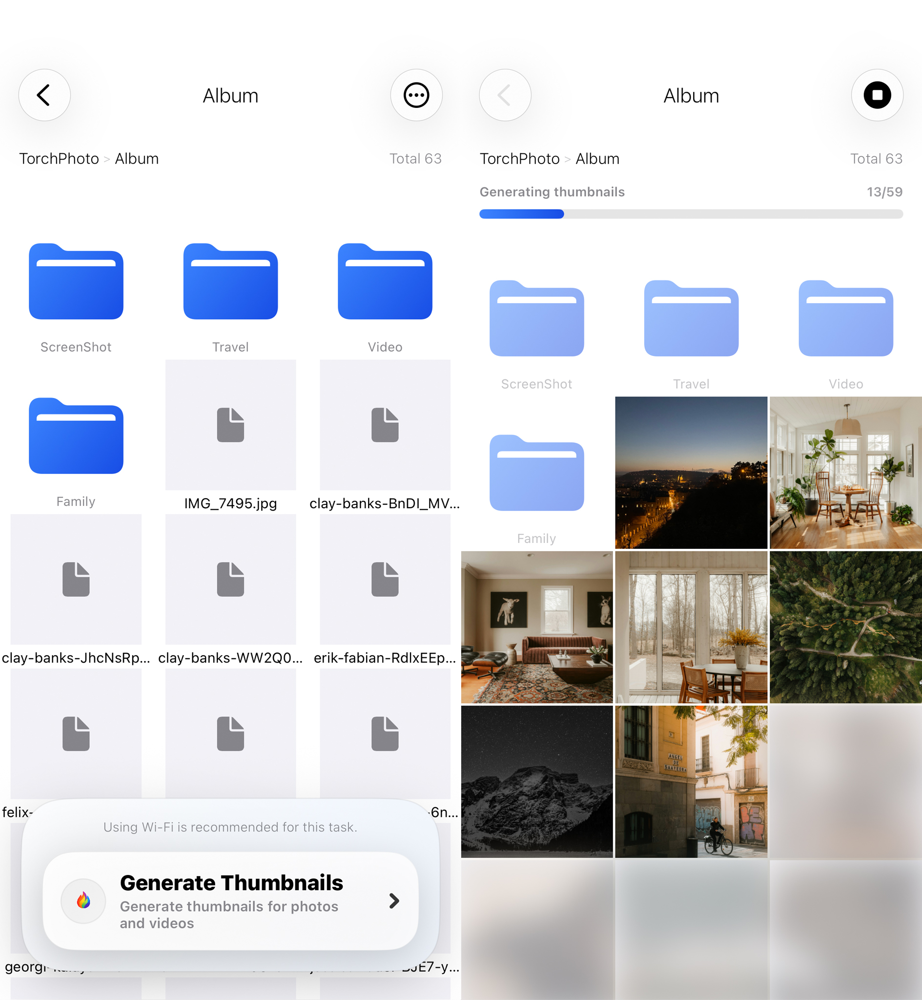
Generate Thumbnails
Thumbnail generation reads supported photos and videos from the current folder—or from the entire registered server when you choose server-wide generation—and creates lightweight previews for gallery browsing. These previews are stored locally as TorchPhoto app data and never modify the original files on your server.
TorchPhoto first tries to read only the data needed for a preview. If a server or file format does not support that method, it may request more data or temporarily download the file. Very large or unsupported videos may show a placeholder instead. Opening a photo or video can temporarily pause generation so the item you selected loads first.
- Move to a folder containing photos or videos
- Run thumbnail generation for the current folder or the entire server
- Keep the generated thumbnails for faster browsing, Offline Mode, Timeline Viewer, and widgets
5. Folder Tag
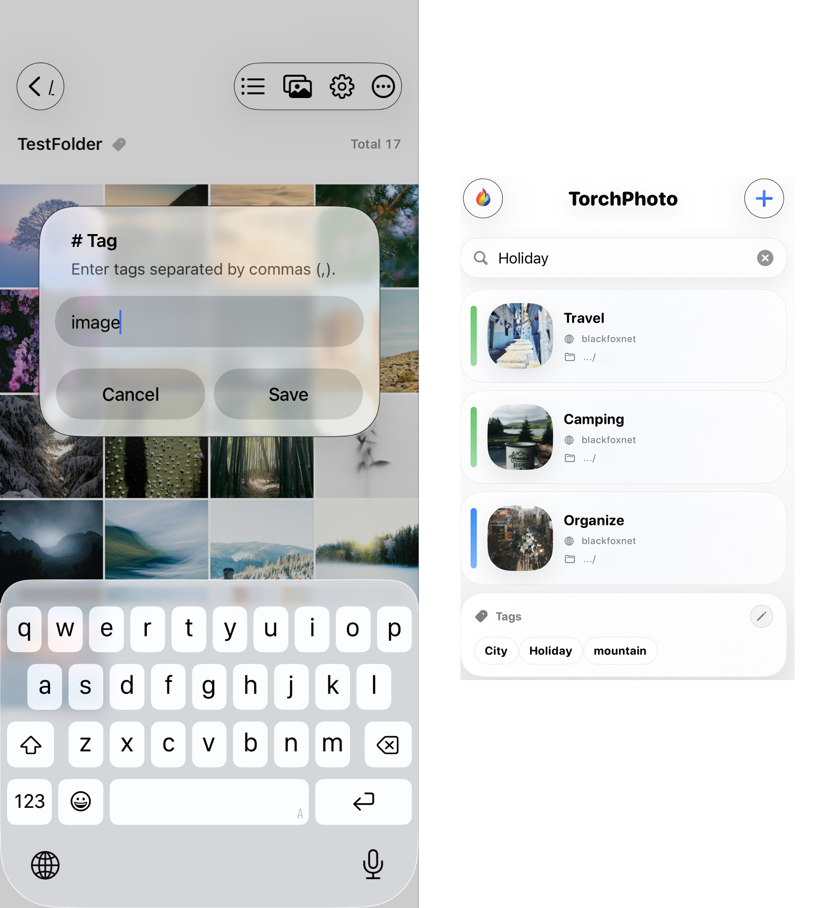
Folder Tag Feature
Folder tags are labels stored by TorchPhoto to help you find important server folders without changing the folders themselves. Tap a folder name, enter one or more tags separated by commas, and later search those tags from the server list screen.
Adding or editing a tag does not rename, move, or write anything into the server folder. It only changes how that folder is organized inside TorchPhoto.
- Tap the folder name to assign tags
- Use commas for multiple tags
- Search tags on the server list screen
6. Upload / Backup
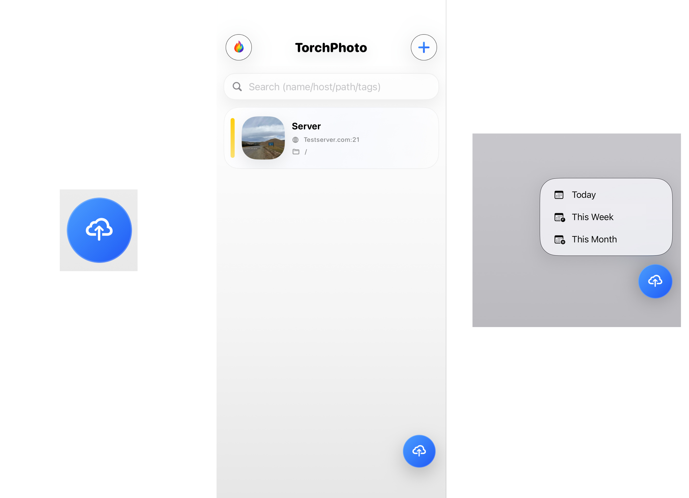
Upload and Backup
Upload sends selected photos and videos from your iPhone directly to a folder inside the registered FTP, SFTP, SMB, or WebDAV root. Choose the destination folder before starting; TorchPhoto can create a new folder when the server protocol and account permissions allow it. Successful uploads can also generate thumbnails automatically, so the new items are ready for gallery browsing.
For a date-based backup, long-press the upload button on the server list and choose Today, Yesterday, This Week, This Month, or a custom range. The custom end date is included. Check the upload log for completed and failed items, and keep TorchPhoto in the foreground during a large transfer because iOS can pause long network work in the background.
- Select photos and videos to upload
- Choose a destination inside the registered server root
- Use date-based selection for repeat backups and review the upload log
7. Play Slideshow
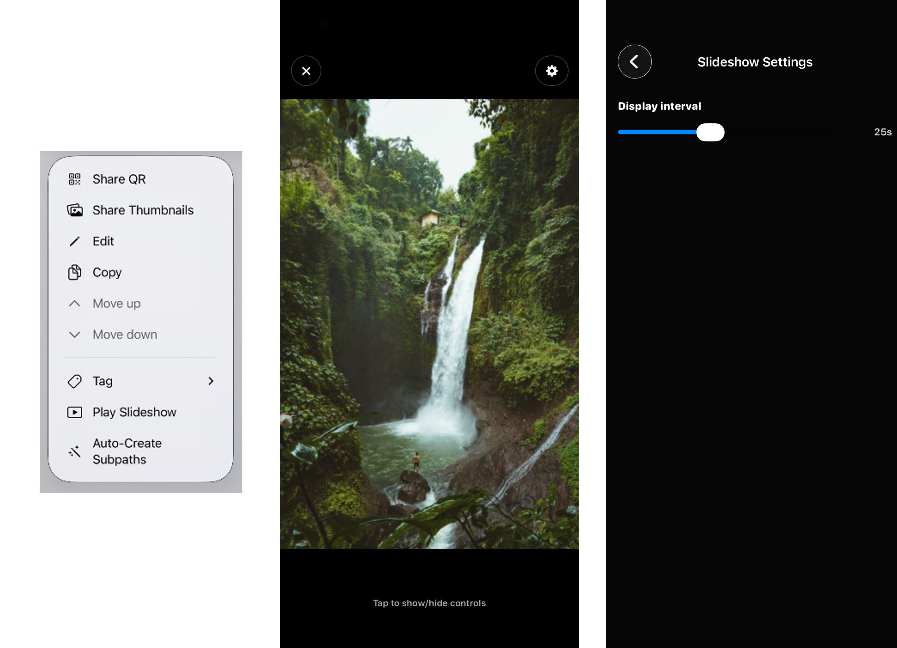
Play Slideshow
Slideshow turns the photos stored on a selected server into automatic album-style playback. Long-press the server item to start, then set the playback interval and choose how the images fill the screen. TorchPhoto remembers slideshow settings separately for each server.
You can also set background music and a starting volume, or select multiple songs from the Music app for sequential, repeating playback. Photos are loaded from the server as the slideshow runs, so a stable connection helps when original files have not already been loaded. This feature is available in PRO.
- Long-press a server item to start the slideshow
- Adjust the playback interval and screen-fill behavior
- Add one or more Music app songs for repeating playback
8. Offline Mode
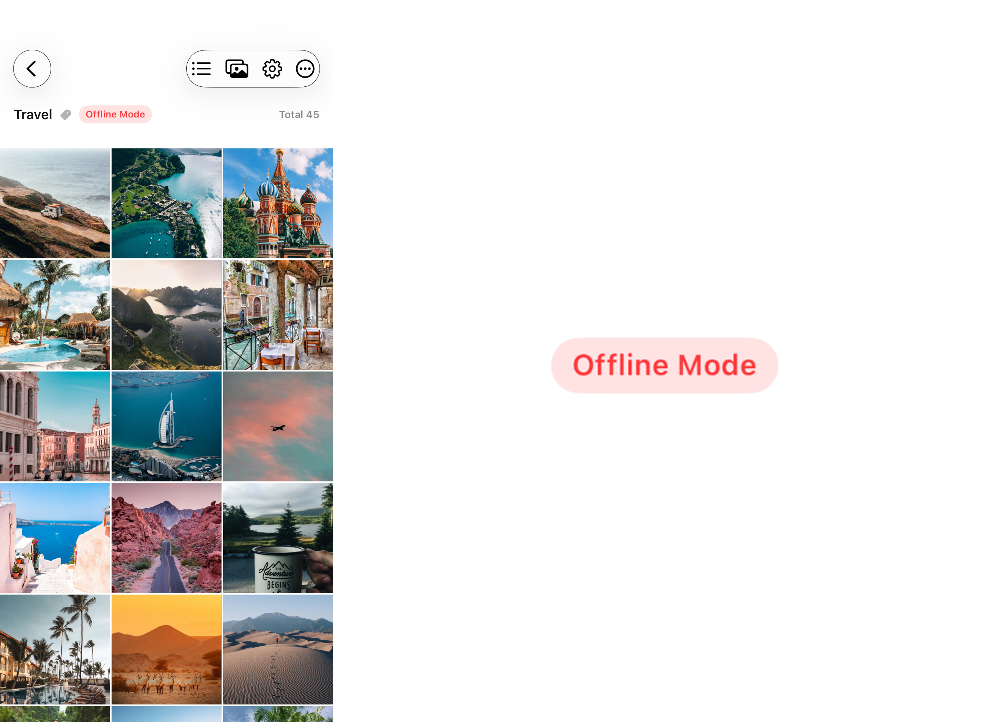
Offline Mode
Offline Mode uses the generated thumbnail cache and remembered folder structure to let you browse prepared server galleries when the server is powered off or the network is unavailable. Generate thumbnails while connected before traveling or entering an area with an unstable connection.
Offline browsing does not download or duplicate every original file. Opening, saving, or sharing a full-resolution original still requires access to the server unless that file was separately saved on the device. If a server address, port, folder name, or file path changes, TorchPhoto may treat it as a new item and require a new thumbnail.
- Generate the folders you need before going offline
- Browse cached previews while preserving the server folder structure
- Reconnect to the server when you need an original file
9. Thumbnails Widget
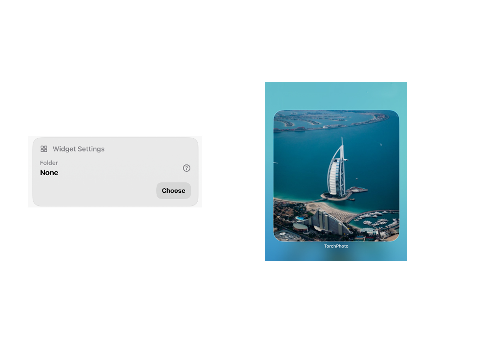
Thumbnail Widget
The widget displays generated photo thumbnails from the server and folder selected in TorchPhoto's widget settings. It reads the local thumbnail cache, so it can continue showing prepared images even when the server or internet connection is unavailable.
Generate thumbnails first, then choose the desired server and folder in Settings. Only generated thumbnails that match that selection are used; placeholder previews and items whose server path has changed are not treated as available widget images.
- Generate thumbnails, then go to the settings screen
- Select a folder in widget settings at the bottom
- Keep the cached previews available for offline widget display
10. Save Video Frame
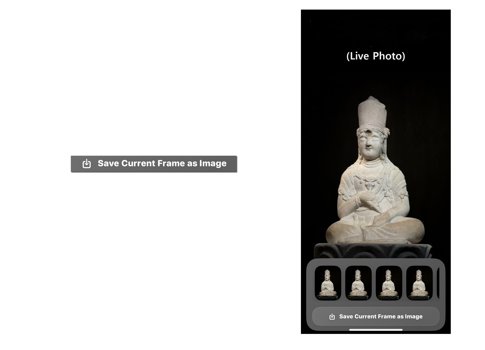
Save Video Frame
Move to the moment you want in a server video, then long-press the video to open its metadata view. The frame section at the bottom lets you save the selected moment as an image while preserving the source video's resolution. The original video on the server is not changed.
This works the same way in the paired video (Live Photo) viewer. Long-press the paired video to display its frames at the bottom, choose the desired frame, and use the same save button.
- Play a video from the server
- Long-press the video to view metadata
- Save a frame from the bottom section of the metadata view
11. Quick Start
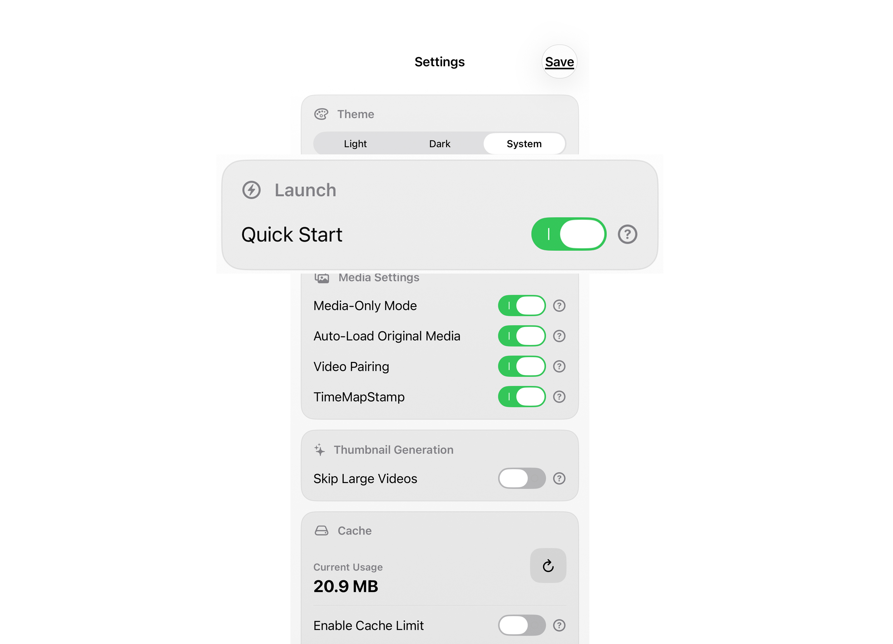
Quick Start
Quick Start is a PRO-only launch option that skips the logo screen and opens the server list immediately. Enable it in Settings when TorchPhoto is mainly used to reach an existing server as quickly as possible.
This changes only the first screen shown at launch. It does not connect to a server automatically, start a backup, or change any saved server settings.
- Open Settings in TorchPhoto
- Enable the Quick Start feature
- Launch the app and go straight to the server list screen
12. Thumbnail Cache Backup & Restore
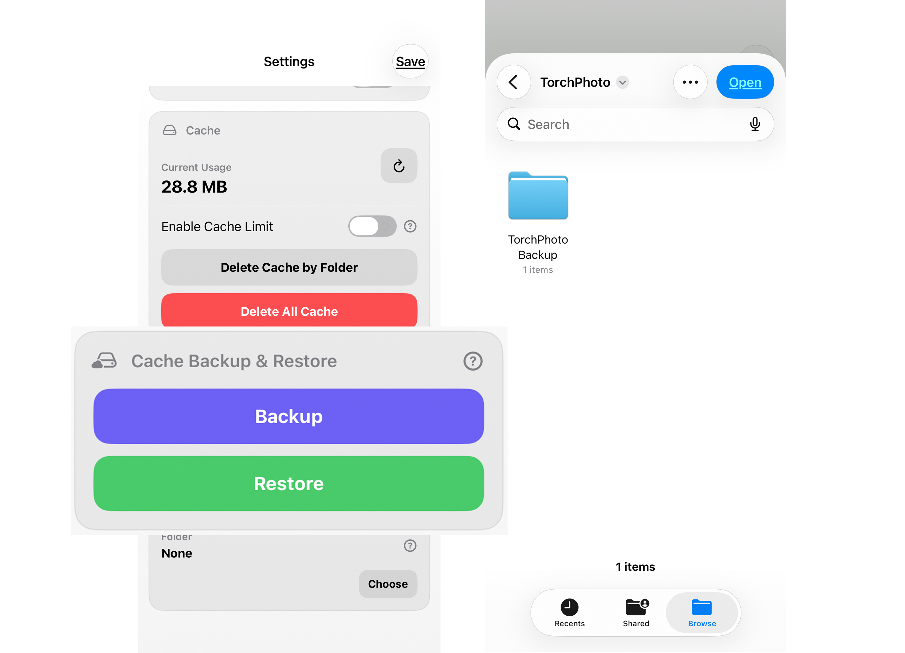
Thumbnail Cache Backup & Restore
Thumbnail Cache Backup & Restore is a PRO-only feature that exports generated previews so they can be restored without reading every photo and video from the server again. It is useful before changing devices, reinstalling TorchPhoto, or preparing another iOS device that connects to the same server.
The backup contains thumbnail data only—it is not a backup of your original photos, videos, or server. Restored thumbnails match most reliably when the server identity and folder paths remain the same. Keep TorchPhoto in the foreground during a large backup or restore, then open the matching server to confirm that its gallery cache is available.
- Open Settings in TorchPhoto
- Go to Thumbnail Cache Backup & Restore
- Export the generated cache, then restore it on a matching server setup when needed
13. Live Photo Pairing
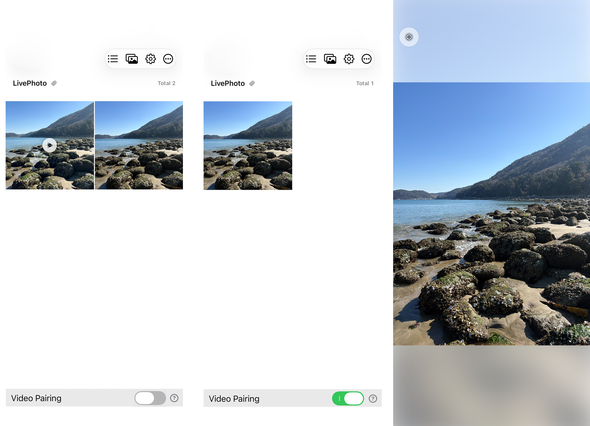
Live Photo Pairing
When an iOS Live Photo is stored on a server, it normally appears as two separate files: one photo and one short video. With Video Pairing enabled, TorchPhoto recognizes files in the same folder that have the same base filename—such as IMG_0001.HEIC and IMG_0001.MOV—and presents them together as one Live Photo-style item. This feature is available in PRO.
The paired video may no longer appear as a separate item in the normal file list because it is opened from the pairing control in the photo viewer. Pairing changes only how the two files are displayed in TorchPhoto; it does not merge, rename, or modify the files on the server.
- Turn on the Video Pairing feature in Settings
- Keep the matching photo and video in the same folder with the same base filename
- A short video will play from the icon in the top-left corner of the photo viewer
14. Save Live Photo
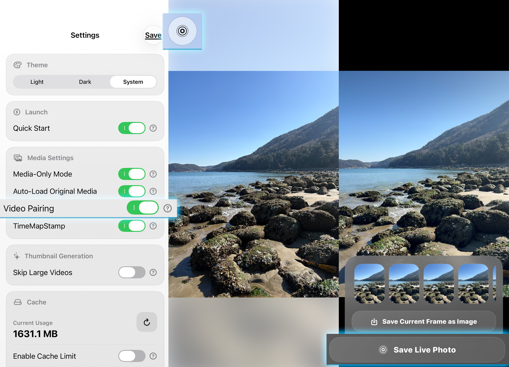
Save Live Photo
Save Live Photo retrieves both parts of a valid paired item—the still photo and its matching short video—and adds them to the iOS Photos app as one Live Photo. The two source files remain separate and unchanged on the server. This feature is available in PRO.
Both original files must still be accessible, so connect to the server before saving. Open the pairing video from the photo viewer, long-press it, and use the Save Live Photo button shown at the bottom.
- Turn on the Video Pairing feature in Settings
- Play the Live Photo video for the photo you want to save
- Long-press the Live Photo and tap the Save Live Photo button at the bottom
16. Timeline Viewer
Browse Generated Thumbnails by Date or Location
Tap the Timeline Viewer button on the server list to browse generated thumbnails across your registered servers. Choose Year, Month, or Day to change the date grouping, or choose Location to explore items that contain GPS metadata on a map.
To jump to another date, tap the date heading at the top of Timeline Viewer. In Year view, select a year. In Month view, select a year and then a month. In Day view, select a year, month, and day in order. The picker shows only dates that actually contain generated thumbnails, so unavailable dates are not presented as empty destinations.
TorchPhoto sorts an item by its embedded capture date when that date has been verified. If no usable capture date is available, it uses the file modification date instead. Recently captured items appear first. Newly generated or regenerated thumbnails save available capture-date and location information immediately; run Metadata Scan to fill this information for older thumbnails.
The Location view groups nearby items according to the map zoom level. A marker shows a representative thumbnail and the total item count; zooming in separates the group into smaller areas, and tapping it opens a regional timeline with Year, Month, and Day views. Items without GPS metadata remain available in the date timeline but do not appear on the map.
- Generate thumbnails before using Timeline Viewer
- Use Year, Month, Day, or Location from the timeline controls
- Tap the date heading to jump through the available year, month, and day hierarchy
- Change the grid between 3 and 8 columns when you need a different thumbnail size
- Connect to the server when you need to open, save, or share a full original that is not stored locally
17. Metadata Scan
Update Capture Dates and Locations for Existing Thumbnails
On the server list, long-press the Timeline Viewer button. TorchPhoto first prepares the list of eligible items, then opens Metadata Scan and begins working. You can cancel during preparation. The scan includes photos and videos that already have generated thumbnails; it does not crawl every original file on the server or add items that have no thumbnail.
Metadata Scan records an available capture date and GPS location in TorchPhoto's local thumbnail metadata index. It normally reads only the parts of an original that are needed. For a video whose metadata cannot be confirmed from a partial read, TorchPhoto can temporarily download the complete original once for a deeper check and remove the temporary file afterward. A completed full check is remembered so a video that genuinely has no such metadata is not downloaded in full on every scan.
Keep the scan page open until it finishes. TorchPhoto prevents the screen from sleeping while work is active and shows counts for Capture Date, Location, and Unable to Verify. Tap Stop when necessary; after the current work stops safely, the button changes to Close. Missing metadata is normal—TorchPhoto never invents a date or location that is not present in the original.
- Use it after updating from an older version, or when dates and map locations for existing thumbnails look incomplete
- Only thumbnail-backed items are scanned
- Items without a verified capture date use their file modification date for sorting
- The scan also removes stale metadata records whose matching thumbnails no longer exist and rebuilds timeline data
18. Show Tips Again
Reset Feature Tips
If you dismissed a TorchPhoto tip and want to see it again, open Settings, scroll to the bottom, and tap Reset Tips. Tips for the related features will appear again the next time you enter their screens or perform their actions.
Reset Tips changes only the saved tip visibility. It does not remove registered servers, thumbnails, captions, media, subscriptions, or other app settings.
- Open Settings and scroll to the bottom
- Tap Reset Tips
- Return to the related feature to view its tip again
19. Send Diagnostics
Help Improve TorchPhoto When a Diagnostic Notice Appears
If TorchPhoto detects diagnostic information that may help explain an error, a diagnostic item can appear in Settings. Please tap Send Error whenever possible. TorchPhoto prepares a feedback email with the diagnostic report attached so the problem can be investigated and improved. Review the prepared email, add any helpful details about what you were doing, and send it.
Diagnostic reports are not uploaded automatically. Choosing Ignore closes the notice without sending a report, so use it only when you do not want to report the issue. Sending the report is the most useful option because the technical context can make an intermittent problem possible to reproduce and fix.
- Open the diagnostic item shown in Settings
- Tap Send Error and review the prepared feedback email
- Add the steps that led to the problem, then send the email
20. IPTC Metadata
View and Organize EXIF and IPTC Information
Long-press a supported photo or video in the viewer to open its metadata. TorchPhoto displays the information that is actually embedded in the file, including available file details, EXIF camera data, capture date, location information, and IPTC fields such as title, headline, description, keywords, creator, credit, copyright, and location names. EXIF and IPTC labels help identify the source of each field.
An IPTC title is not the same as the media filename, and IPTC information is separate from TorchPhoto's own caption feature. If a file does not contain a particular field, TorchPhoto leaves it out rather than inventing a value. Viewing and organizing metadata in TorchPhoto does not modify the original file on your server.
Use the edit button beside the metadata close button to choose which EXIF, IPTC, file, and location fields are visible. Drag the fields to arrange them in the order you want. These display preferences are saved as app data and are included in TorchPhoto's supported backup and restore process.
- Long-press supported media to open the metadata view
- Use the EXIF and IPTC labels to identify each type of information
- Open Edit to show, hide, and reorder metadata fields
21. Custom Popup
Display Selected Metadata Directly in the Viewer
Open Settings and enable Custom Popup, then open its popup settings. The feature is off by default on a new installation. Choose the metadata fields to display and arrange their order. Each field can use a custom display title and font size. You can also set a temporary display duration or keep the popup visible, adjust its background transparency and text shadow, and decide whether it appears after TimeMapStamp.
Lock Position places the popup at the Top Left or Top Right of the media's actual displayed area and applies the matching text alignment automatically. When Lock Position is off, press and hold only the popup box in the viewer, then drag it to the desired location. TorchPhoto remembers the saved position. Quickly double-tap the popup to hide it.
The popup appears after the original media and its metadata are ready in supported image, video, GIF, APNG, animated WebP, and AVIF viewers. Starting to zoom hides it for the current item so it does not cover the enlarged media. The popup does not replace the full metadata view opened by long-pressing the viewer, and its settings do not modify the original file.
- Go to Settings, enable Custom Popup, and open Popup Settings
- Choose fields, titles, sizes, timing, transparency, shadow, and position
- Long-press the popup to move it when unlocked, or double-tap it to hide it